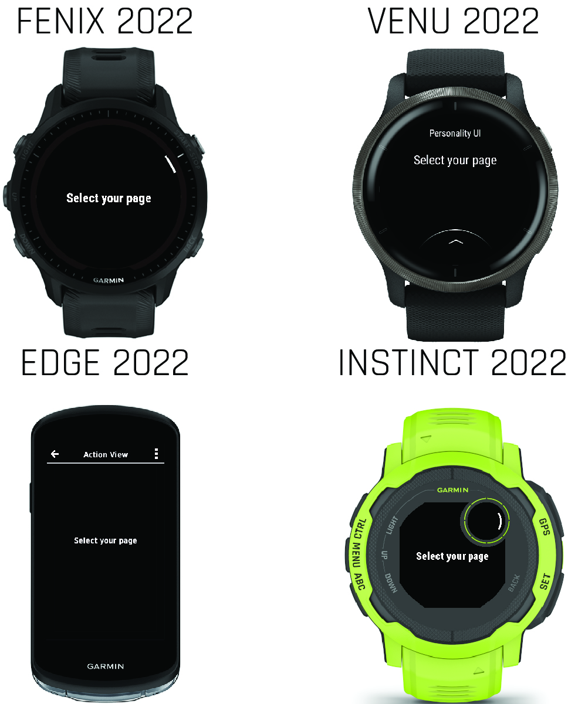

Action Views
Action views are screens that provide both information and a contextual menu of actions. These actions might be steps or tasks that can be performed on the visible information.
Each product has a standard hint about how to access the contextual action menu.
Example
<!-- layout.xml -->
<!-- ActionMenu hint -->
<bitmap id="actionMenu" personality="
system_icon_dark__hint_action_menu
system_loc__hint_action_menu" />Action menus do not support iconography.
Example
<!-- menu.xml -->
<action-menu id="ActionMenu">
<action-menu-item id="edit" label="@Strings.edit" />
<action-menu-item id="dismiss" label="@Strings.dismiss" />
</action-menu>// InputDelegate.mc
function onKey(evt as KeyEvent) as Boolean {
if (Styles.system_input__action_menu has :button &&
evt.getKey() == Styles.system_input__action_menu.button) {
showActionMenu();
return true;
}
return false;
}
function onTap(evt as ClickEvent) as Boolean {
if (!(Styles.system_input__action_menu has :button) &&
$.isInActionArea(evt.getCoordinates())) {
showActionMenu();
return true;
}
return false;
}
function onActionMenu() as Boolean {
showActionMenu();
return true;
}
function showActionMenu() as Void{
WatchUi.showActionMenu(new WatchUi.ActionMenu(),
new MyActionMenuDelegate());
}The system_input__action_menu will let you know if the product uses a button or a touch area to trigger the contextual information.
Example
// Helper: isInActionArea
//! Function to see if a tap falls within the touch area for
//! a action menu.
//! @param x X coord of tap
//! @param y Y coord of tap
//! @return true if tapped, false otherwise
function isInActionArea(coord as Array<Numeric>) as Boolean {
if (Styles.system_input__action_menu has :x1 &&
Styles.system_input__action_menu has :y1 &&
Styles.system_input__action_menu has :x2 &&
Styles.system_input__action_menu has :y2) {
var x = coord[0];
var y = coord[1];
if (x >= Styles.system_input__action_menu.x1 &&
x <= Styles.system_input__action_menu.x2 &&
y >= Styles.system_input__action_menu.y1 &&
y <= Styles.system_input__action_menu.y2) {
return true;
}
}
return false;
}Edge 2022 Personality
Products with the Edge 2022 personality have an optional configurable control bar that provides contextual actions. You can configure this bar to have an action menu using the View.setControlBar() API.
Example
// View.mc
if (View has :setControlBar) {
setControlBar({:title=>Rez.Strings.infoPrompt,
:leftButton=>WatchUi.CONTROL_BAR_LEFT_BUTTON_BACK,
:rightButton=>WatchUi.CONTROL_BAR_RIGHT_BUTTON_MENU
});
}By using has in the above example, you can share this code with other products.